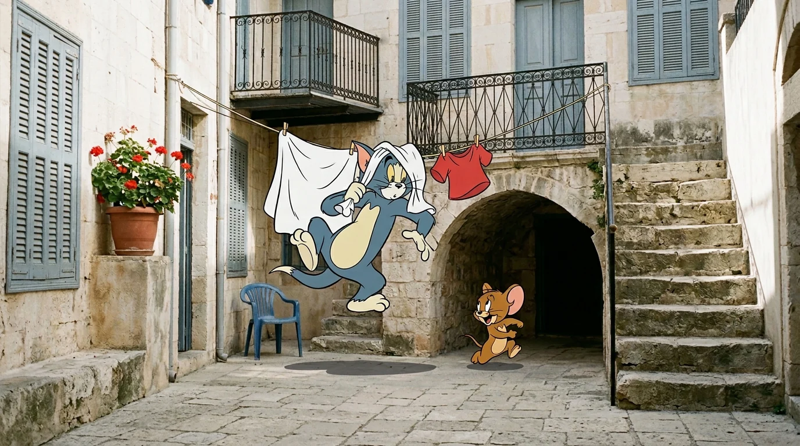
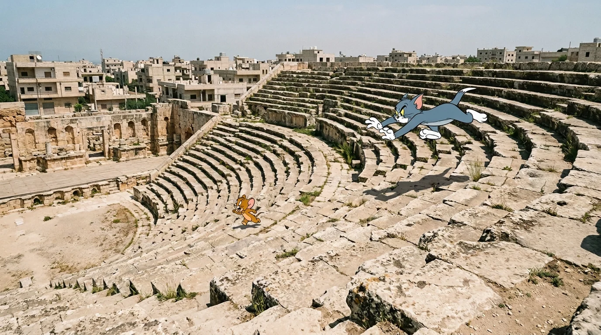
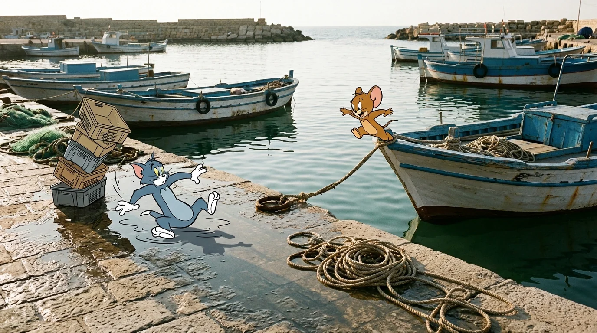
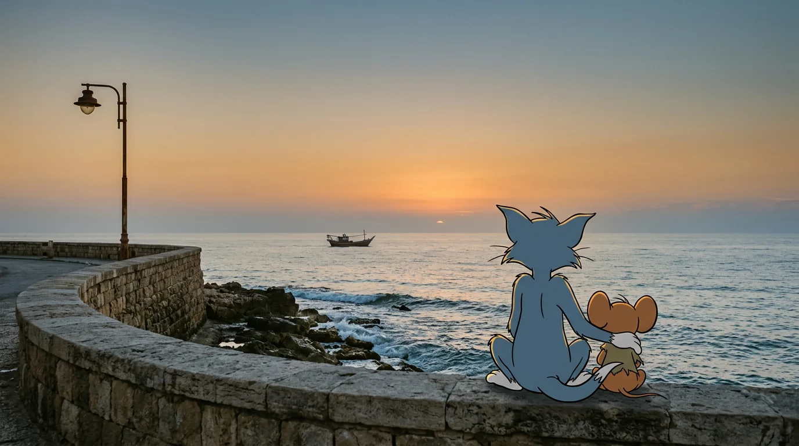

THE OLD TOWN
الحارة القديمة
خرج جيري من تحت باب أخضر، وخلفه ظلّ أطول منه بكثير. هنا تضيق الأزقة وتنخفض القناطر، وهذا كل ما يحتاجه فأر صغير.
أما توم فوجد حبل الغسيل قبل أن يجد الفأر.

THE ROMAN THEATRE
المدرج الروماني
قفز توم الصفوف الحجرية صفاً بعد صف، وجيري يركض على صفّ واحد لا يتركه.
٧٬٠٠٠متفرج يتسع لهم المدرج، وجمهوره اليوم اثنان. المصدر

THE FISHING HARBOUR
ميناء الصيد
عند الميناء حبال مبللة وشباك خضراء وصناديق مكدّسة. قفز جيري إلى حبل قارب أزرق، وكان لرصيف الميناء المبلل رأي آخر في توم.

THE SEA WALL
آخر النهار
وصلا إلى سور البحر متعبَين. جلس توم، وجلس جيري بجانبه، ونسي الاثنان لماذا كانا يركضان.
تنتهي المطاردة عند البحر.
المصادر
- ويكيبيديا: Jableh سعة المدرج الروماني لنحو سبعة آلاف متفرج، والبلدة القديمة على الساحل، والميناء.
توم وجيري شخصيتان من إنتاج Warner Bros. الصور تصوّر بصري مولَّد بروحهما في أماكن جبلة، وليست صوراً فوتوغرافية للمدينة، وهذه الصفحة عمل محبة غير تجاري.